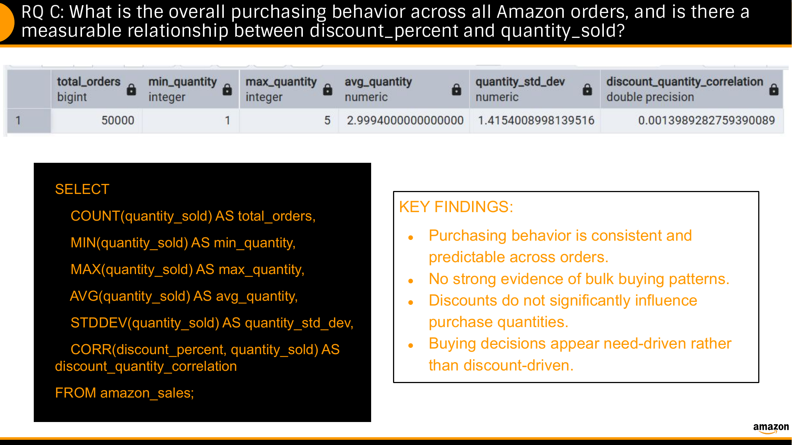
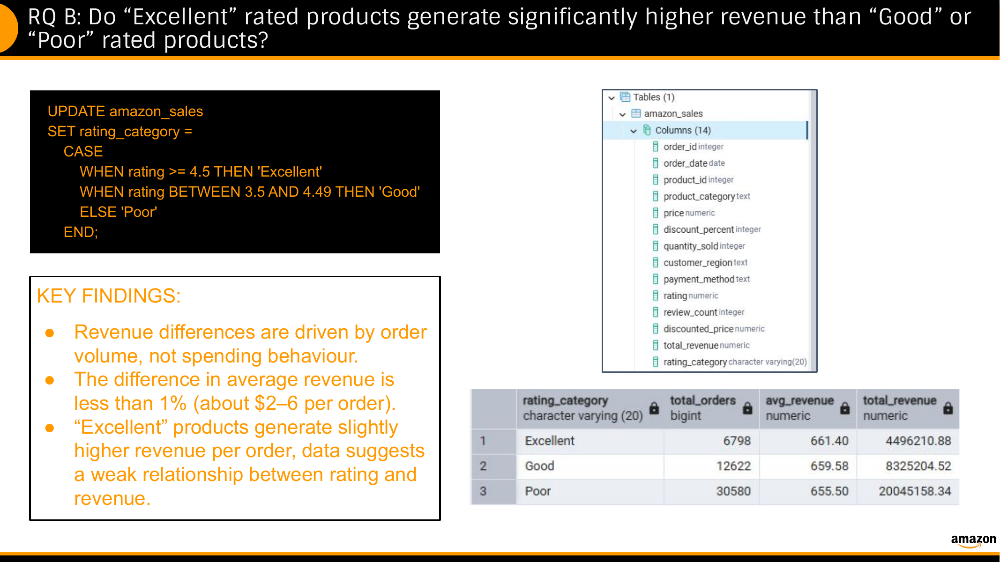
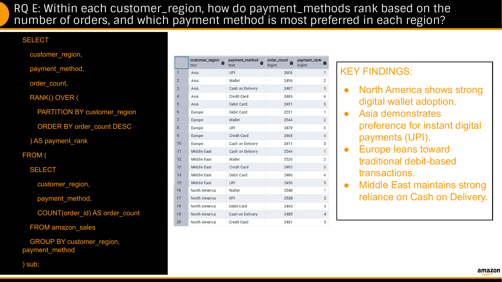
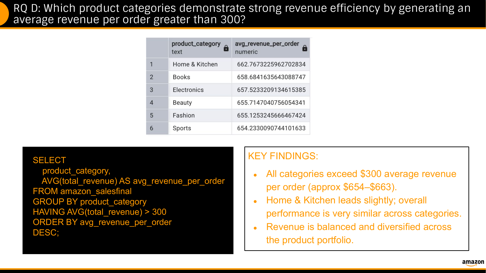

01 · Filter
Isolated relevant transactions and customer groups using SQL filtering conditions.
PROJECT 02 · DATABASE MARKETING
An SQL-driven analysis of e-commerce purchasing behavior, promotional effectiveness, product performance, and regional payment preferences.
01 / THE QUESTION
The project used SQL to investigate purchasing behavior, product performance, discounts, ratings, revenue efficiency, and regional payment preferences across an e-commerce customer base.
The analysis was designed to translate transaction-level data into actionable marketing insights.
02 / FEATURED OUTPUT
The project combined SQL queries, statistical analysis, segmentation, and regional ranking to examine the drivers of e-commerce performance.

03 / APPROACH
The analysis moved from transaction-level filtering and aggregation to statistical testing and regional ranking, then translated the results into marketing recommendations.
Isolated relevant transactions and customer groups using SQL filtering conditions.
Used aggregate functions to summarize purchasing and revenue behavior.
Compared rating groups, purchasing behavior, product categories, and revenue performance.
Used window functions to rank payment-method preferences within customer regions.
Connected database findings to promotional, segmentation, cross-selling, and regional marketing strategies.
04 / ANALYSIS 01
Purchasing behavior was analyzed using descriptive statistics and the correlation between discount percentage and quantity sold.
The project reported a correlation of approximately 0.0014 between discount percentage and quantity sold, indicating essentially no meaningful linear relationship in the analyzed dataset.
05 / ANALYSIS 02
Numerical ratings were grouped into Excellent, Good, and Poor categories, then compared using order volume and revenue measures.

Average revenue per order was highly similar across the three rating categories, suggesting that rating alone was not a strong differentiator of average order revenue in this dataset.
06 / ANALYSIS 03
Order counts were grouped by region and payment method, then ranked within each region using a SQL window function.

Different payment methods ranked first across regions, supporting the idea that checkout and promotional strategies may benefit from regional adaptation.
07 / ANALYSIS 04
Average revenue per order was calculated by product category and evaluated against a performance threshold.

The analyzed categories all exceeded the project's $300 average-revenue-per-order threshold, with relatively similar performance across categories.
08 / KEY FINDINGS
The near-zero correlation suggests that deeper discounts were not meaningfully associated with larger purchase quantities in this dataset.
Average revenue per order was highly similar across the rating groups.
Average revenue per order was distributed across categories rather than concentrated in one dominant category.
Payment-method rankings differed by region, supporting localized checkout considerations.
09 / MARKETING IMPLICATIONS
Favor targeted promotional strategies instead of assuming broad discounting will increase order quantity.
Combine ratings with revenue, volume, and other performance indicators rather than relying on ratings alone.
Use category performance as an opportunity for targeted bundles and cross-selling.
Adapt payment and promotional strategies to regional customer preferences.
10 / SKILLS & TOOLS
11 / ORIGINAL DELIVERABLES
View the original presentation and final report for the complete SQL analysis, methodology, findings, and recommendations.